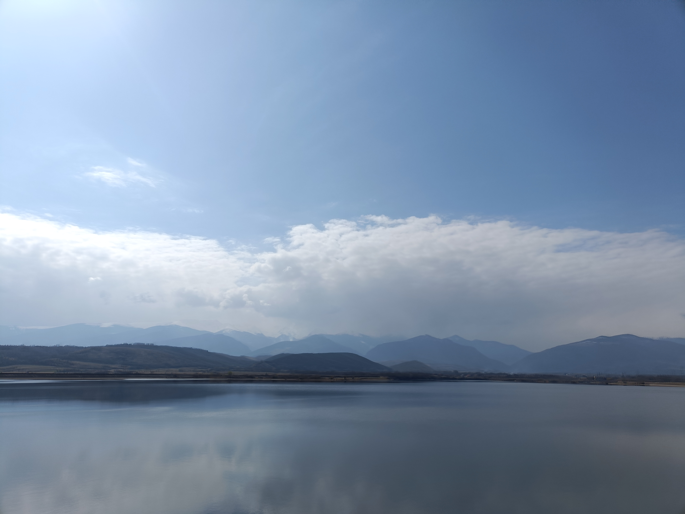

Obiective Autentice
Locuri reale, fără filtrul turistic artificial.

Biserica Densuș
Unul dintre cele mai vechi lăcașuri de piatră din România, construită cu fragmente din Sarmizegetusa.

Cetatea Colț
Ruinele care l-au inspirat pe Jules Verne. Un drum spectaculos prin istorie și legendă.

Lacuri din Retezat
Ochiurile albastre ale munților, unde liniștea devine o experiență în sine.